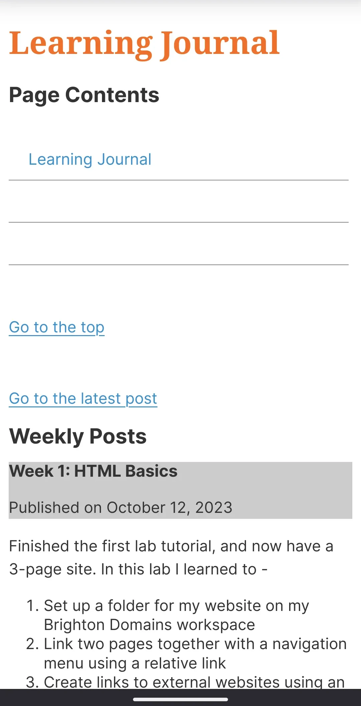
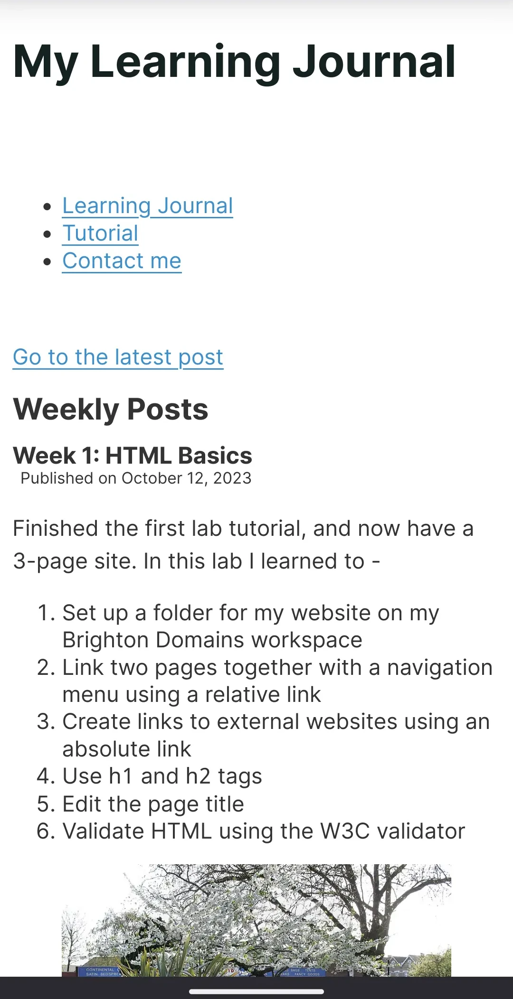
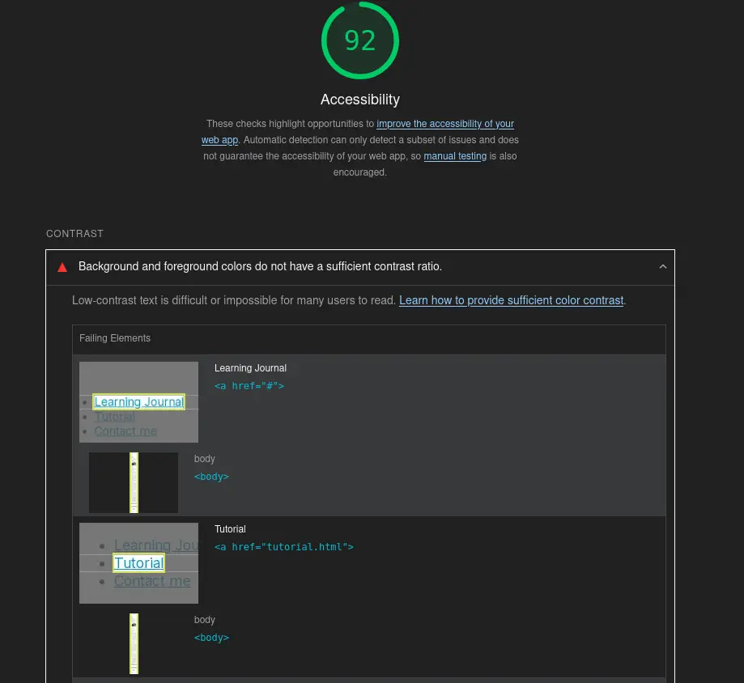
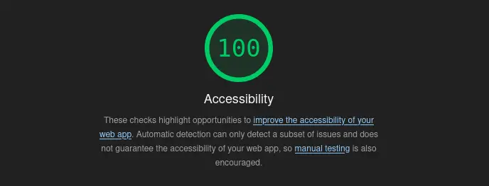
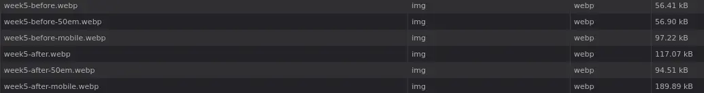

This week I learned about Cascading Style Sheets (CSS). CSS is used to style HTML markup such as modifying font sizes and types or by changing the overall page style with margins or padding. CSS uses selectors to style elements. There are different types of selectors:
Type selectors - which select based on an element's type (e.g. paragraph, header 1)
Class selectors - which select based on an element's assigned class(es) (e.g. menu)
ID selectors - which select based on an element's assigned ID (e.g. week3)
Attribute selectors - which select based on attributes of tags (e.g. the href of a link)
Pseudo-classes and Pseudo-elements - which select based on certain element states (e.g. a:hover, when a link is hovered over)
Combinators - which are used to combine multiple selectors together (e.g. article > p selects all paragraphs that are direct children of articles)
I also learned that not all browsers treat CSS in the same way, and that a stylesheet called "normalize.css" exists that can be used to have all browsers treat your CSS identically.
Week 4: Styling fonts
Published on
This week I've learned about styling fonts, fallback fonts and importing external fonts.
I learned that there are two different ways to import external fonts, either using a <link> tag or by using @import in a css file. I was curious about the difference between the two: if there was any real difference and why the example chosen was to use <link> instead of @import.
I found that the reasoning was performance1: it's not recommended to use @import, as it has a performance overhead on the loading of the site. @import doesn't always download stylesheets in parallel - they are downloaded sequentially, one after the other if any <link> tags are used to load fonts or if @import is used across multiple stylesheets. This means that the site will take longer to load if you mix @import and <link> or have multiple stylesheets using @import. To contrast, if <link> is used, each font will be loaded in parallel, regardless of where it is used, so the loading time of the website will only be affected by the longest-loading font.
Week 5: Responsive Web Design 1
Published on
In this week's tutorial, I learned how to create a responsive website, using media queries and css grid layout structure. As well as this, I spent some time modifying the site to my own liking, and I set up a git repository on the brighton domains server so that I can work with the files in a way that is familiar to me. This also means that I have a much more natural way of keeping track of what I've done each week, which is a very happy bonus.
The commits I made this week were as follows:
Indentation, fix stylesheet.css
Change h1 style, improved page layout, changed media query I didn't like the way the header was styled - it was still using placeholder css, so I've had it use the same font as the rest of the page - I feel that Sans-Serif suits the style of the page much better, and given it a very dark teal for the colour. Also changed the link colours so they behave how a user expects, but they use slightly calmer colours than default. I made the main section take up all three columns in the largest layout, I prefer this. I am considering adding another media query to widen it again past another threshold, since the page still feels a bit too narrow past a certain point
Improved padding and footer wording
Below, there is a before and after picture for this week.
Before:

After:

Week 6: Responsive Web Design 2 - Flexible Media (But mostly accessibility)
Published on
This week's tutorial showed me how to make images and video flexible within an HTML document by utilizing the CSS max-width, overflow and width properties. Therfore, I've updated the images previous to this post so that they are flexible, and all images in this post and future ones will be.
I've spent some (not insignificant) time reading through the tags that I have available2 to make the HTML of the page more idiomatic and therefore accessible, and read about the code tag. While it's not groundbreaking, it is nice that I can now explicitly say that I'm embedding a code snippet, as well as apply my own styling to that end.
Although I am aware that this page is not available via search engines, I have become interested in improving the SEO of this site, mostly for practice and because it's interesting to learn about, as well as that I have the opportunity to work on the development of a live site, and SEO will be important there. To assist in that, I decided to install a browser extension - Google Lighthouse3, as it seemed the most convenient way to check. The good thing that I've found about Lighthouse is that it also gives me a lot of other information - notably accessibility information. So before I did any SEO, I felt I had to review that.
While the site gets a pretty good score, 92, Lighthouse highlighted for me that the contrast ratio between the default colour for links and the background is too low:

Lighthouse also, very helpfully, points me to a website4 that I can use to check the contrast ratio of my colours, and select colours that contrast better. I picked another colour using their tool, updated the stylesheet and I am now very happy to report that the site scores perfectly on automated5 accessibility tests:

Despite having not actually managed to get to the SEO that I wanted to get to, I do feel that this post in particular is getting a little long, and this is everything that I got through this week, so everything else I want to do right now (including some more media query work) will be for me to do next week.
Week 7: More media queries, new responsive layouts
Published on:
This week I've carried on with some of the things I wanted to do last week. The first change I've made is to the images from week 5, and will be matched in any images of the site going forward. I had felt it didn't make sense to show visitors a version of the website that doesn't match their view, especially if I'm trying to show how the site has changed. To match this, I went back into my commit history and found the commits that matched those images. I then took screenshots of the page before and after on my mobile phone, and in the 50em view. I figured that I could use media queries to show and hide these dynamically, by setting the display css property to either none or block, depending on if it should be shown or not.
It worked well, images now change based on the screen the user is viewing from. However, the issue I have with this is that it downloads every image, regardless of which will be shown to the user:

I knew this could be fixed with lazy loading, but that would require Javascript, I want to do this using only HTML and CSS. I did some research6, 7, 8 and found that it's supported by use of the <picture> and <source> tags. I can define multiple <source>s for one <picture> element, and by using media queries, the browser will select the correct one and only load that image. I also made sure to give each <source> a type attribute, as that should save a round trip to the server (no need to ask the server the MIME type of the data). All of this also means I can remove the CSS I wrote to do this earlier, which is a shame that I wasted some time on it, although it was good practice of media queries so I'm not too fussed. With those changes made, the network graph now looks like this: